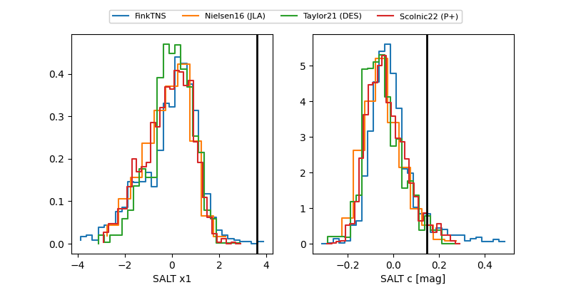

FINK: ZTF25abqdqzc
Lasair: ZTF25abqdqzc
ALeRCE: ZTF25abqdqzc
TNS: 2025xow
YSE: 2025xow
ZTF25abqdqzc (ztf,fink)
2025xow (tns,yse)
ATLAS25ljx (atlas)
equatorial (ra, dec) = (12.7798,-8.41666)
galactic (l, b) = (122.6863,-71.28826)

last atlasc=18.71, atlaso=19.02, ztfg=18.73, ztfr=18.60
3 atlasc, 2 atlaso, 4 ztfg, 5 ztfr detections